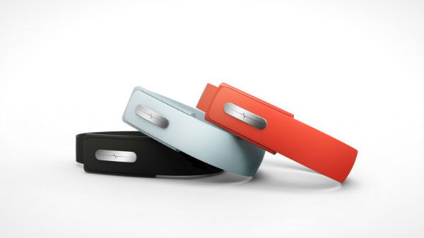

Een idee dat mij leuk lijkt, is een bandje dat hartslagen meet. Zo kun je bijvoorbeeld zien of mensen in dezelfde ruimte als jij zich op hun gemak voelen in de ruimte of juist niet. Hiermee kan je bijvoorbeeld meten hoe iemand zich voelt tijdens het presenteren of wanneer je een gesprek met elkaar hebt. Uiteindelijk zou dit idee ook kunnen helpen met het meten van gezondheid. Als iemand, bijvoorbeeld een hele lage hartslag heeft, kan er een melding gestuurd worden naar een ander persoon in de ruimte. Op deze manier kan er dan gecontroleerd worden of er een probleem is en of er misschien een dokter moet komen of dat iemand naar het ziekenhuis moet.
Daarnaast kan het bandje ook ingezet worden voor, bijvoorbeeld een datingsbedrijf. Is een hartslag hoog als twee personen met elkaar praten of is er totaal geen interesse. Op deze manier kun je misschien een perfect match vinden. Op deze manier maakt het niet veel uit hoe de ruimte is ingedeeld, wel is het belangrijk dat de daters met elkaar kunnen praten. De informatie komt dan binnen via een programma en zo wordt er berekend wie een goede match kunnen zijn.
Ik vind wearebles best interessant. Tegenwoorrdig zijn er al veel punten die je met wearebles kunt doen. Bijvoorbeeld chips in kleding, smartwatches en noem maar op. In het hoorcollege kregen we ook een voorbeeld over een chip die onder de huid werd geplaatst. Hier kan best een toekomst in zijn, maar dat zie ik nog niet helemaal voor me.